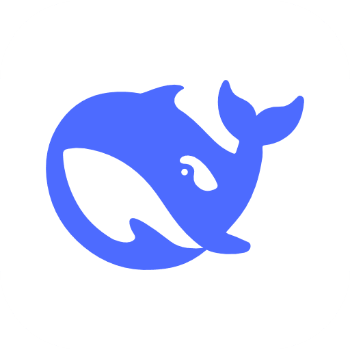
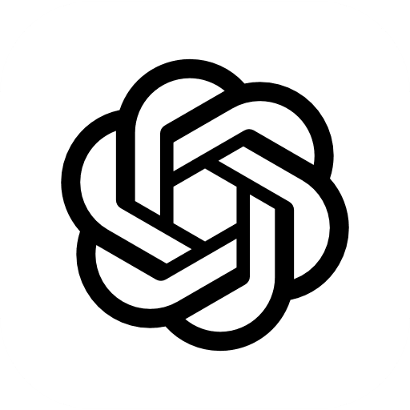

DeepSeek
Long-context reasoning and review steps. Point it at a whole repository or a day of logs and let it summarise, review or plan before a coding agent takes over.
Resources
Guides, references and answers for teams connecting AI agents into secure, repeatable workflows. Start with the quickstart, then go deep on the agent you use.
Start here
Rihaan is small on purpose. A workflow is a list of steps, each step is run by an agent or a person, and every run is sandboxed and recorded. These three pages cover the rest.
Install the CLI, connect one agent and run a two-step workflow end to end. Fifteen minutes, one terminal, nothing to deploy.
Pick your agent 02Workflows, steps, connectors and approvals: the four ideas everything else is built from, in the vocabulary you will see in the audit log.
Read the concepts 03How isolated execution, scoped permissions and the audit trail protect every run, and what your security team will want to review.
Open the secure systemCore concepts
Everything in Rihaan, from the CLI to the audit log, is described with these four terms. Learn them once and every screen reads the same way.
A named list of steps with a trigger: a schedule, a webhook, a pull request or a person pressing run. Workflows are versioned, so a change is a diff you can review, not a surprise.
One unit of work, carried out by an agent, a tool or a human. A step declares what it needs, such as a repository, an API or a file, and gets nothing else.
The bridge to an agent or a tool. Connectors hold credentials in the vault, scoped to the workflows that use them, and are never exposed to a step's output.
A gate a person must pass before the workflow continues. Reviewers see the exact change or action, decide in one click, and the decision is written to the audit trail.
Agent guides
Each guide covers connecting the agent, granting the smallest set of permissions it needs, and what its steps look like in the audit trail. Mix agents freely inside one workflow.

Long-context reasoning and review steps. Point it at a whole repository or a day of logs and let it summarise, review or plan before a coding agent takes over.
Agentic coding in a sandboxed checkout of your repository. Every edit lands as a reviewable diff, with file and network policy set per workflow.

Batch code generation and refactors across many repositories. Queue tasks, require approval per task and keep the full transcript for later.
Lightweight assistant steps that can run on your own hardware behind Rihaan's policy layer, for work that must never leave your network.
Fast conversational and research steps. Rate limits, data retention and region settings are enforced per workflow, not per developer.
Library
Short answers to the things teams ask before their first workflow. If yours is not here, the contact page reaches an engineer directly.
Runs execute in isolated sandboxes that are destroyed afterwards. Transcripts and diffs are kept only as long as your retention policy says, in the region you choose, and are never used to train anything.
Yes. Keys are stored encrypted in the vault, scoped to individual workflows, injected at run time and never written to logs or step output.
Any step can require a human. Reviewers see the exact diff or action, approve or reject in one click, and the decision is recorded in the audit trail with who and when.
The run pauses with the failing step's transcript attached. You can retry the step, skip it, or hand it to a different agent without restarting the workflow.
Everything in the interface is available through the CLI and a REST API, so workflows can be created, triggered and audited from your own systems.
Tell us which agents you use and what you want to automate. We will set up a pilot workflow in your environment.